Alongside my product work, I regularly supported Cloudflare's Blog graphics team and the project stakeholders behind each launch. Using the team's shared design toolkit, I designed unique announcement banners for blog posts and translated dense technical concepts into custom diagrams, the kind of visuals that help a reader grasp how a protocol or product actually works.
This is a curated set of that work, organized by year. The banners set the tone for a launch; the diagrams do the harder job of making something technical feel obvious.
A pair of diagrams created for the Cloudflare Blog explaining how API caching decides what to store and when to clear it. These are concepts that are easy to get wrong in prose but click immediately when you can see the request flow.
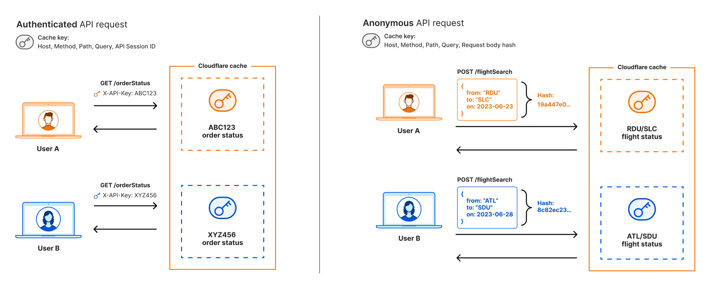
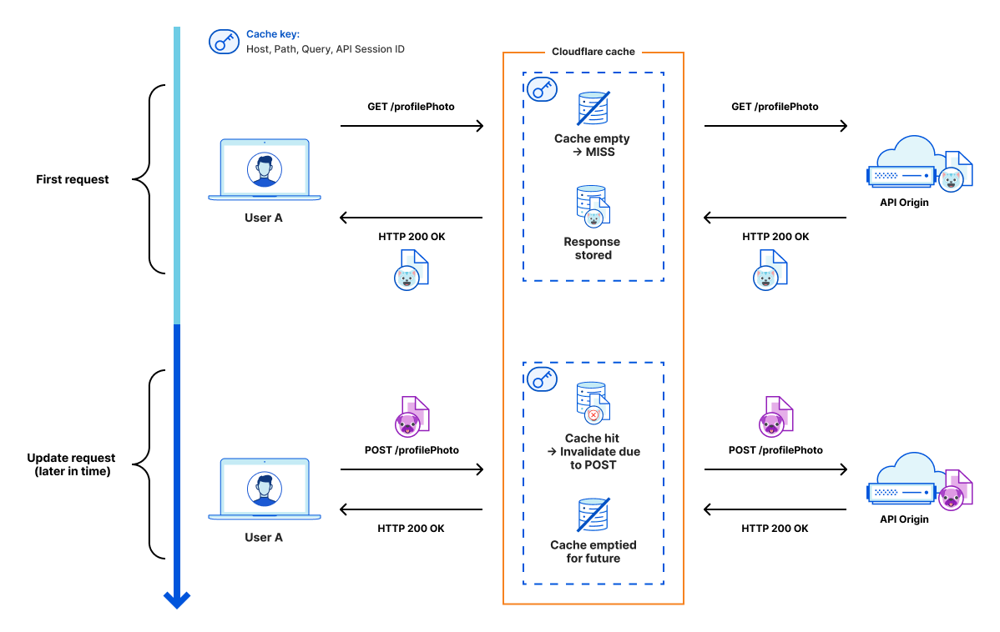
A year of launch banners and explainer diagrams, from Speed Week and Impact Week to security research and developer-platform posts.
Banners: announcement art built from the Blog illustration toolkit to give each post its own identity.
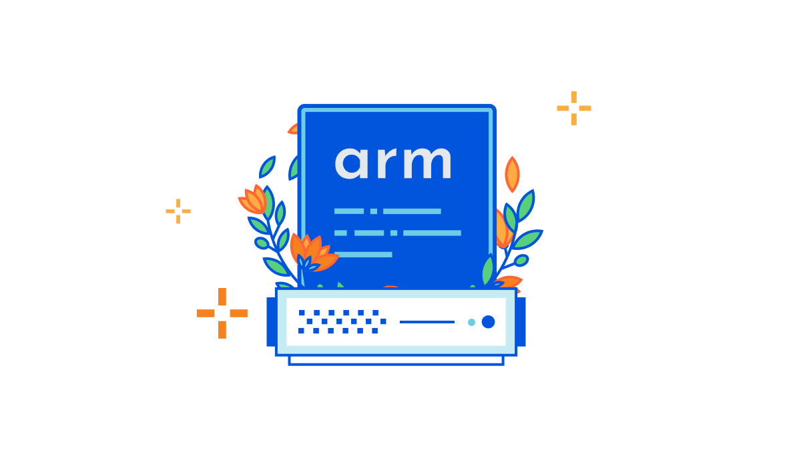
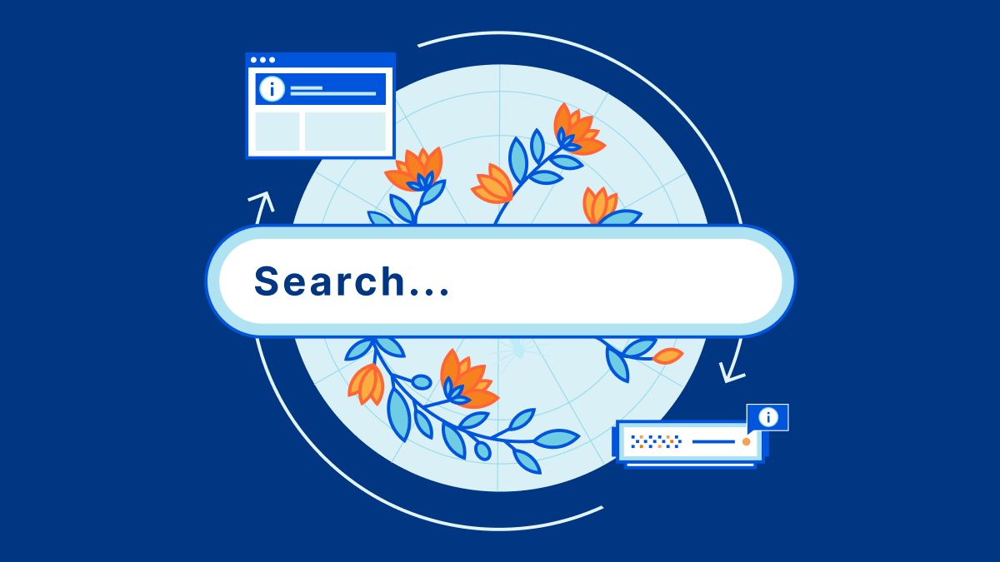
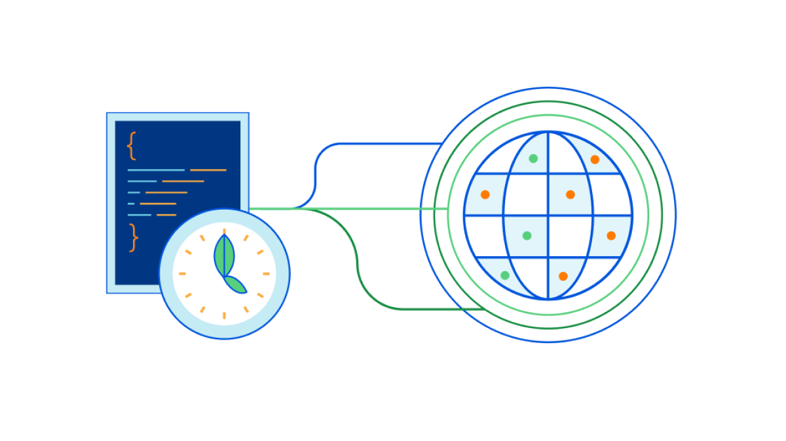
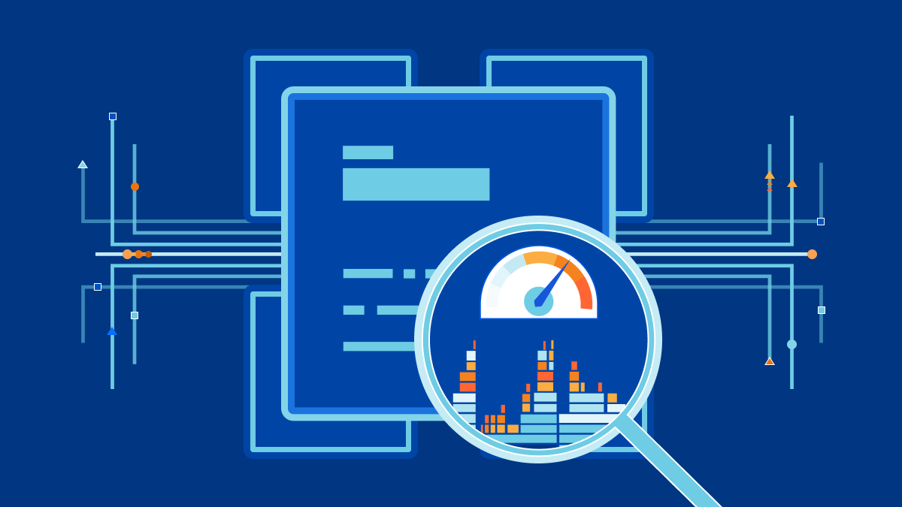
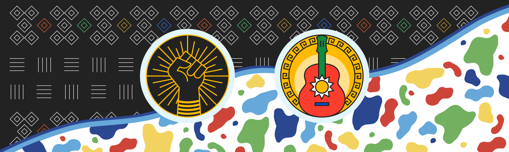
Diagrams: custom technical illustrations that walk a reader through how each system works.
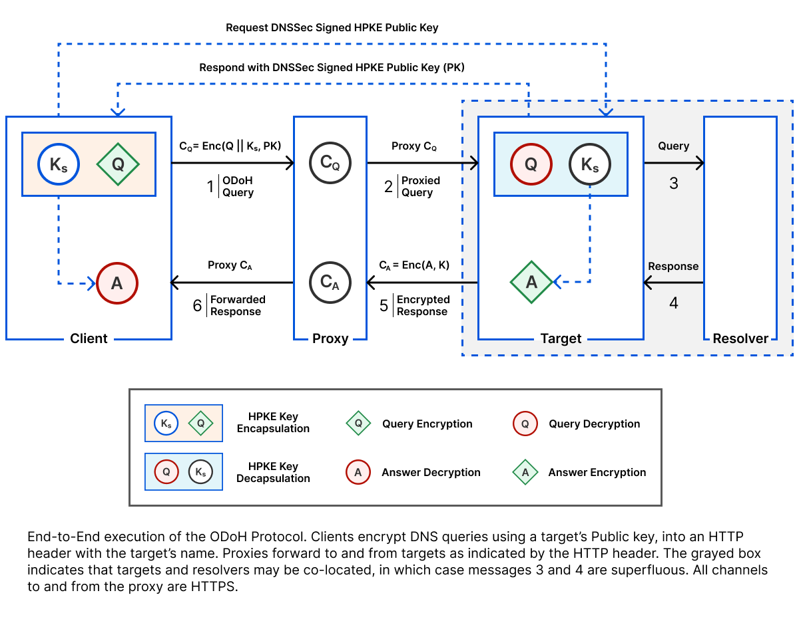
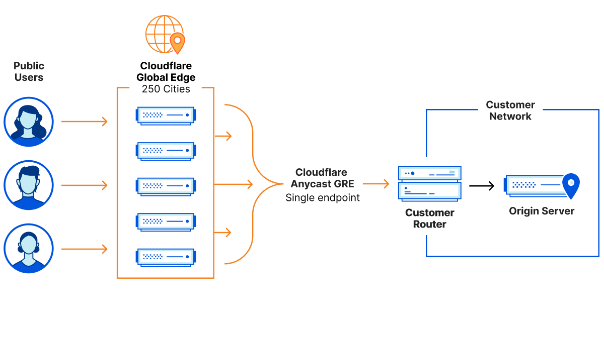
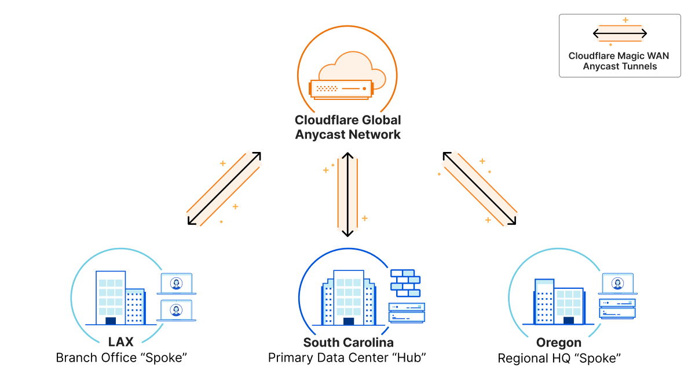
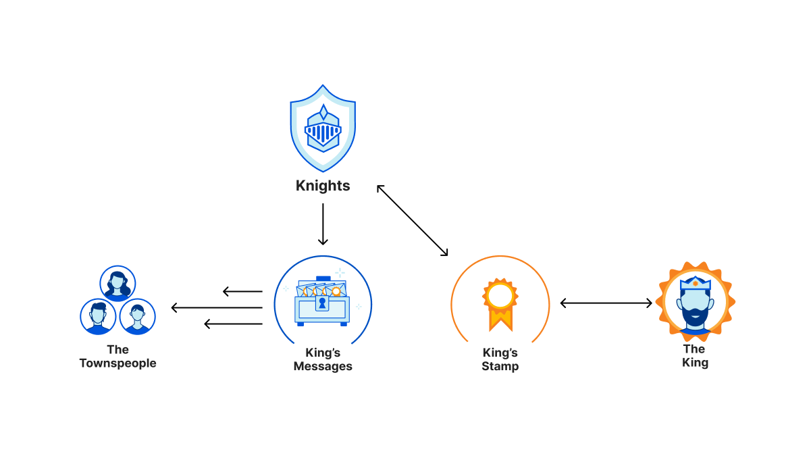
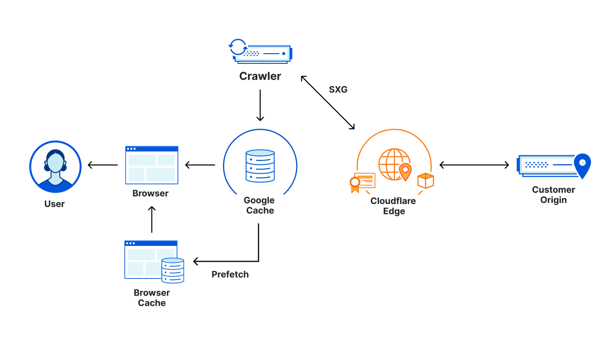
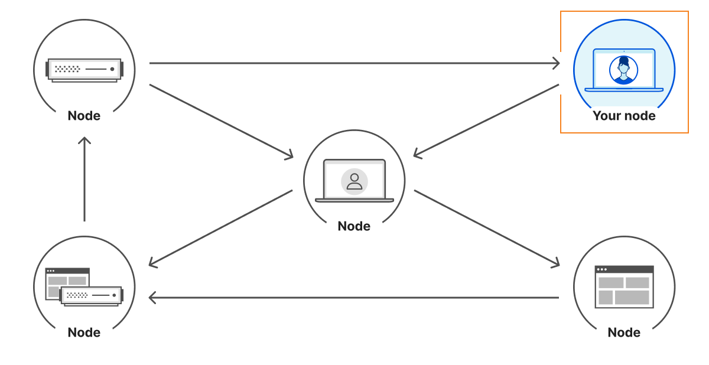
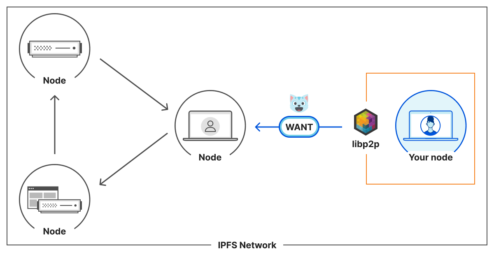
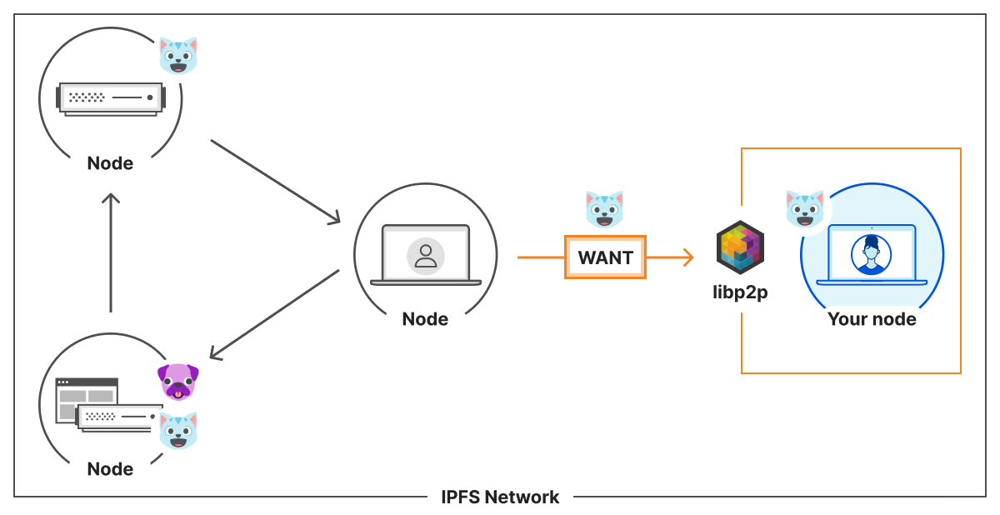
libp2p “WANT” request (left), then the matching blocks served back from whichever peers hold them (right).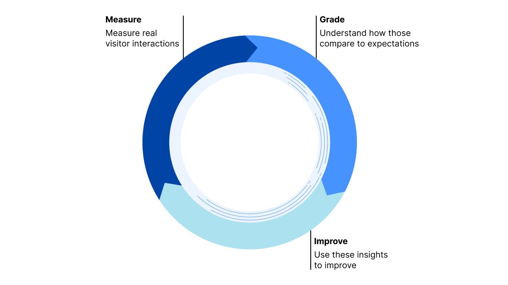
// More Work
View all projects